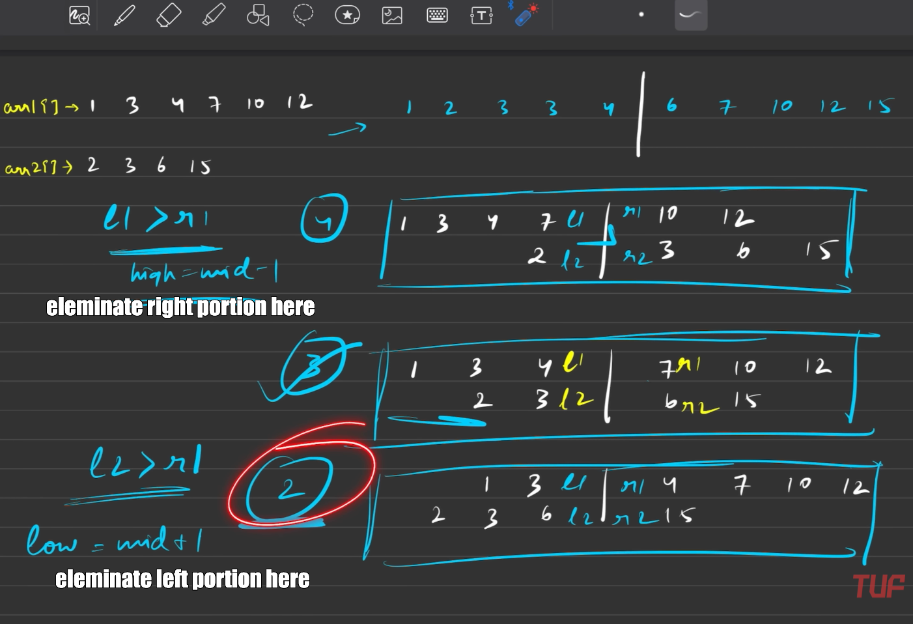

// C++ solution code goes here
//Brute force
double median1(vector<int>& a, vector<int>& b) {
// Write your code here.
int i = 0, j = 0, n1 = a.size(), n2 = b.size();
int n = n1+n2;
int elem2m2 = n/2;
int elem1m1 = elem2m2-1;
int firstmed = INT_MIN, secondmed = INT_MIN;
int cnt = 0;
while(i < n1 && j < n2)
{
if(a[i] < b[j])
{
if(cnt == elem1m1) firstmed=a[i];
if(cnt == elem2m2) secondmed=a[i];
cnt++;
i++;
}
else
{
if(cnt == elem1m1) firstmed=b[j];
if(cnt == elem2m2) secondmed=b[j];
cnt++;
j++;
}
}
// Handle remaining elements in `a`
while (i < n1) {
if (cnt == elem1m1) firstmed = a[i];
if (cnt == elem2m2) secondmed = a[i];
cnt++;
i++;
}
// Handle remaining elements in `b`
while (j < n2) {
if (cnt == elem1m1) firstmed = b[j];
if (cnt == elem2m2) secondmed = b[j];
cnt++;
j++;
}
if(n%2 == 0) return (firstmed+secondmed)/2.0;
return secondmed;
}
double median(vector<int> &a, vector<int> &b) {
// Ensure that array 'a' is the smaller array
int n1 = a.size();
int n2 = b.size();
if (n1 > n2)
return median(b, a);
// Recursively call with swapped arrays if 'a' is larger
// Initialize low and high pointers for binary search on the smaller array
int low = 0, high = n1;
int left = (n1 + n2 + 1) / 2;
// This represents the number of elements in the left partition
while (low <= high) {
// Partition the smaller array 'a' using binary search
int mid1 = (low + high) / 2;
// Midpoint of the first array (a)
int mid2 = left - mid1;
// The corresponding partition index in the second array (b)
// Assign boundary values for comparison
int l1 = (mid1 > 0) ? a[mid1 - 1] : INT_MIN; // Left part of array 'a'
int l2 = (mid2 > 0) ? b[mid2 - 1] : INT_MIN; // Left part of array 'b'
int r1 = (mid1 < n1) ? a[mid1] : INT_MAX; // Right part of array 'a'
int r2 = (mid2 < n2) ? b[mid2] : INT_MAX; // Right part of array 'b'
// Check if we have found the correct partition
if (l1 <= r2 && l2 <= r1) {
// If the combined length of the arrays is odd,
//return the maximum of the left parts
if ((n1 + n2) % 2 == 1)
return max(l1, l2);
// If the combined length is even,
//return the average of the max of the left parts and
//the min of the right parts
return (double)(max(l1, l2) + min(r1, r2)) / 2.0;
}
// Adjust the binary search range
// If the left part of 'a' is too large, move 'high' down
else if (l1 > r2)
high = mid1 - 1;
else // Otherwise, move 'low' up
low = mid1 + 1;
}
return -1.0; // Edge case, shouldn't occur as input is assumed to be valid
}
